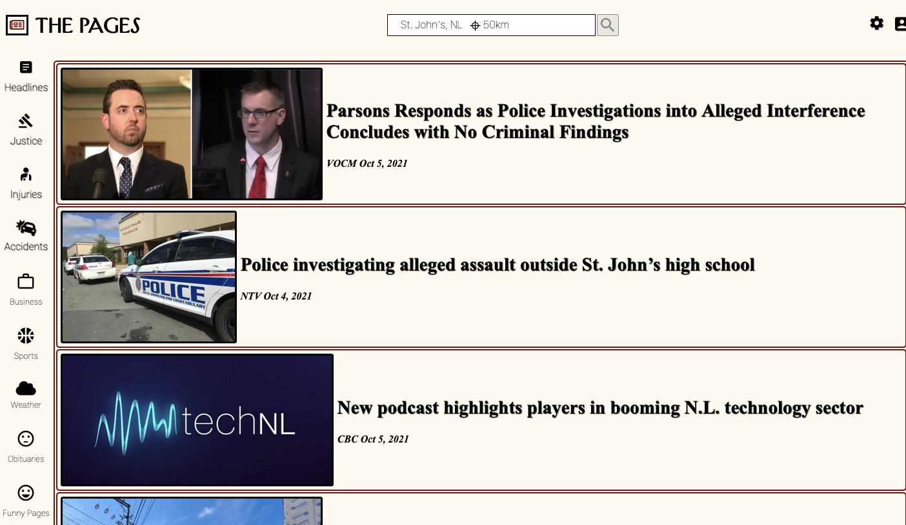
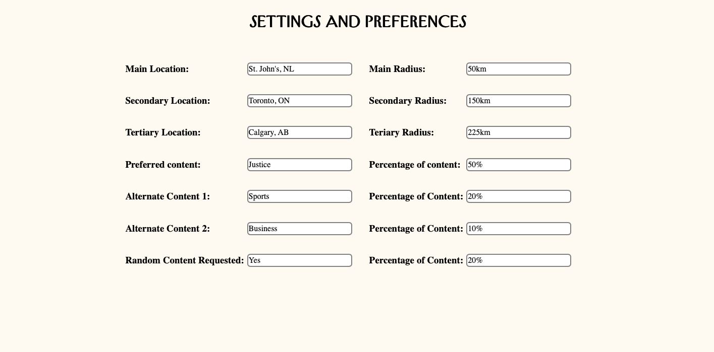

For all your latest news
The Pages is a news viewing site that offers a individualized touch where the user is in command of the news they get to see.
With a few small pieces of information, the user can customize the location and range of where their news is sourced from. And if that wasn't enough, the user can also request how much news from a selection of catgories they wish to end up on their feed.
Create your own account, easily and efficiently and away you go. The Pages is a wonderful way of eliminating the jumping from site to site to see different news sources. The Pages; your one-stop-shop for news.